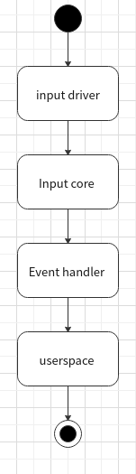
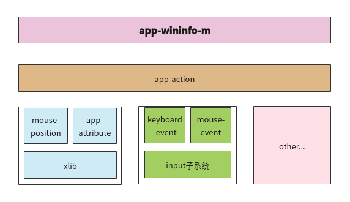
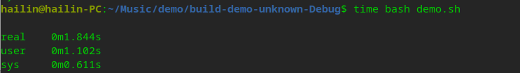

应用于桌面应用压力测试的模拟输入工具调研🐟
相关术语🐟
| 术语 | 解释 |
|---|---|
| InputDevice | 支持 linux 管理不同类型、不同原理、不同的输入信息的输入设备软件体系 |
| MEM | MEM 是一个内存显示程序，显示所有内存驻留程序的占用情况 |
| 输入子系统 | 输入子系统核心层（Input Core）、驱动层和事件处理层（Event Handler） |
| ## 问题 | |
| 随着文件管理器（以下简称"文管"）的使用者越来越多，厂商和社区反馈了越来越多反复操作后出现概率概率性 BUG，为了对 BUG 进行复现，就需要进行压力测试。 |
在我们日常压力测试过程中，文管测试组需要使用现有的设备进行问题复验和场景压测，设备和人力资源有限，因此，在复现和验证这些问题的过程中，存在着如下问题：
-
耗时巨大，追其原因，是因为在测试过程中，测试复现时反复操作的顺序不同、频率不够、操作慢都可能导致Bug无法复现，整个复现周期相对较长，人力和时间耗费较多。
-
无可靠性，在遇到概率性 BUG 进行回归的时候，我们无法确定需要测试多少次才能确保问题已修复，而且有可能人力压力测试无法达到复现条件，没有数据支撑测试结论。
因此，探索一种良好的压力测试方案，是迫在眉睫的，可以更准确的验证及回归问题，并且减少人力资源和提升测试效率。
现状🐟
基于上述问题，当前市面上对于应用压测存在如下几个方案：
方案一：使用 Python 脚本进行场景压测
使用 Python 编写压测脚本，需要使用第三方库 PyAutoGUI 和 Dogtail，PyAutoGUI 是一个纯Python 的 GUI 自动化工具，可以用程序自动控制鼠标和键盘操作模拟用户操作行为，多平台支持（Windows，OS X，Linux）
在编写脚本之前，我们首先需要准备环境，即安装 PyAutoGUI 和 Dogtail 库。
开始编写一个简单压测场景脚本：循环一直新建文件夹。
import pyautogui
for i in range(10):
# 鼠标移动到x=100,y=100
pyautogui.rightClick(100,100)
pyautogui.click(x=155,y=117)
一个场景压测，往往不会这么简单，列举部分文管场景压力测试项如下：
| 压测场景 | 压测步骤 | 压测次数/时长 |
|---|---|---|
| 循环执行创建，删除文件 | 1.在桌面/文管空白处，右键菜单 2.点击“新建文件夹“ 3.选择新建文件夹右键”删除“ |
8H |
| 重复打开 1000 张图片的文件夹 | 1.在桌面选择包含 1000 张图片的文件夹 2.关闭文管 |
8H |
| 重复搜索目录中的文件 | 1.打开文件管理器，进入test目录中 2.点击搜索按钮 3.在输入框输入 "test"，进行搜索 4.关闭文管 |
8H |
| 重复同时执行 10 个复制文件任务 | 1.在 dock 栏目右键打开 2 个文管窗口 2.在 A 窗口中，选择文件右键-复制 3.在 B 窗口中，右键粘贴 4.快速粘贴 10 次 5.删除B窗口的文件 |
8H |
| 重复向桌面复制文件 | 1.在dock栏目打开文管 2.选择一个“音乐”目录 CTRL+C 复制文件 3.在桌面粘贴文件 4.关闭提示弹窗 5.关闭文管 |
8H |
可以很直观的看出，这些测试项的操作都较复杂。
Dogtail 是 Python 的三方库，它使用 Accessbility 技术与桌面应用程序通信。代码通过提前设置好的 Accessbility 标签进行操作，但 Accessbility 标签需要开发人员提前在应用程序中添加，在下图一中看到，1021 的文管中就不存在标签，部分版本基线中该方法并不适用。

通过 Dogtail 和 PyAutogui 来控制键盘、鼠标来进行应用的操作，在 Python 代码遍历寻找应用程序上可用的 Accessbility 节点时候，过程需要 1-2S 左右，之后再执行其他操作，这个过程耗时较长，失去了压力测试本身的意义。
纵观整个方案一，缺点是显而易见的，例如无法测试所有的应用版本、无法满足压力测试暴力操作的要求。
方案二：使用 shell 脚本进行场景压测
这个方案使用 Xdotool 工具模拟键盘、鼠标操作，Xwininfo 工具来获取窗体属性，此方法通过窗体固有属性，找到对应坐标，之后来进行键盘鼠标操作，整个流程如下图所示：

UOS 系统自带了Xdotool和Xwininfo工具，这个方法其实和方案二比较相似，方案二使用 Dogtail 定位元素位置、PyAutoGUI 来操作键盘、鼠标，使用wininfo 获取窗体属性计算坐标，通过 Xdotool 控制键鼠操作。
编写shell脚本，使用 Xodtool 工具进行简单操作，运行代码，查看图三，能看到与上述 Python 脚本同样的操作，shell脚本运行时间接近快了1s。
#!/bin/bash/
for in in {0..10}
do
xdotool mousemove 100 100 click 3
xdotool mousemove 155 117 click 1
done

使用 shell 脚本编写：重复向桌面复制文件，并且每次输出桌面和文管的窗口 ID(寻找窗口 ID 来获取坐标) 测试场景，多次运行后，在下图四能看到，同一个场景同一套代码同一个机器，运行结果，极其不稳定，容易报错找不到窗口。

纵观整个方案二：运行环境简单、但是运行结果不稳定。
总结： 现目前这两种方案，各有优劣，都是现阶段较主流的方案，优缺点如表三所示：
| 方案 | 优点 | 缺点 |
|---|---|---|
| 1 | 可自动化、场景覆盖多 | 无法适用所有版本，环境复杂、键鼠操作比较慢达不到压测效果 |
| 2 | 可自动化、运行环境简单，能适用所有版本 | 不稳定 |
在目前的测试环境下，方案一由于 Python 在使用第三方库的时候，程序响应往往都需要 1-2s 时间，运行速度较慢，而且无法满足所有版本的压测需求。方案二使用 shell 脚本编写压测脚本，在运行 Xdotool 工具时候容易出错，Xdotool 工具对键鼠的操作已经算是比较快的工具了，但是在特殊 BUG 上，鼠标操作速度还是有所欠缺，如：异步线程出错，在测试过程中，经常性会遇到这样的小概率问题、同样的操作，有时候能复现问题有时候又不能复现，BUG 复现条件极其苛刻，需要更快的操作增加 复现概率，如下表列举部分的 BUG，在回归 BUG 就需要快速的键鼠操作。
| BUG编号 | 描述 | 严重程度 | 优先级 |
|---|---|---|---|
| 29689 | 【文件管理器】【5.1.1.63-1】【sp2】桌面空白处右键，选择“壁纸与屏保”，再快速在右键，桌面黑屏 | 2 | 2 |
| 26972 | 【文件管理器】【5.1.1.39-1】在列表试图下，快速来回切换排列顺序，再点击上级栏目，文件管理器崩溃 | 2 | 2 |
| 26100 | 【文件管理器】【5.1.1.33-1】4K屏幕，2.75缩放，在桌面空白处快速多次点击右键，桌面崩溃 | 2 | 2 |
| 25591 | 【文件管理器】【5.1.1.31-1】鼠标左右键，快速连续一起按，桌面黑屏 | 3 | 3 |
| 24478 | 【sp1】【文件管理器】【5.1.0.8-1】拖动文件到其他目录下，快速敲击键盘“ctrl+z”出现不正确提示 | 4 | 4 |
| 21172 | 【文件管理器】【5.1.0.8-1】左侧栏目快速切换，右键闪退。 | 2 | 2 |
因此，我们需要对方案二进行优化，找到能解决键鼠操作速度不够快和容易出错不稳定的方案。
技术方案🐟
在用户使用桌面应用时候，都是通过键盘与鼠标输入设备与软件交互。
我们对现状中的方案二进行优化，也参考了 Xdotool 和 Xwininfo 工具的逻辑，设计一款新的应用程序，程序名称为 app-wininfo-m，计划解决上述键鼠操作速度不够快和容易出错不稳定的问题。
对于键鼠操作速度不够快的问题，了解到 Linux 输入子系统，可以通过设备驱动程序写入键鼠事件驱动设备文件来对 USB 键盘输入和鼠标移动进行操作。
一个输入事件，如鼠标移动或者键盘按键事件，到达用户空间传给应用程序，如下图四流程

事件处理层为不同类型硬件提供了用户访问及处理接口。在 /dev/input 目录下显示的是已经注册在内核中的设备编程接口，用户通过 open 这些设备文件来打开不同的输入设备进行硬件操作，当打开设备 /dev/input/mice 时，会调用到事件处理层的 Mouse Handler 来处理输入事件，这也使得设备驱动层无需关心设备文件的操作，因为 Mouse Handler 已经有了对应事件处理的方法。
对于容易出错不稳定的问题，是 Xdotool 这个工具在经过长时间运行后获取窗口 ID 值出错，目前我们能接触到的 UOS 系统图形化界面都是基于 X11 协议，Xlib 是 X11 协议的 API 实现，另外用于代替 Xlib 的新型 API 为 XCB。下图五 Xlib 告诉我们每个窗口和像素图都有自己的坐标系，通过坐标系的位置，可以鼠标定位操作应用。

整体设计🐟
app-wininfo-m 自上而下的模块结构呈现如下图七：

当按照这种模式设计，每个业务都比较统一有序和模块化，再扩展其他功能更加方便，不会影响到原有的功能。
- keyboard-event：处理用户传入类型为 EV_KEY 的事件，将事件写入到 “/dev/input” 目录下的键盘设备文件中，上报事件和同步给 input 子系统中。
- mouse-event：处理用户传入类型为 EV_REL 的事件，将事件写入到 “/dev/input” 目录下的鼠标设备文件中，上报事件和同步给 input 子系统中。
- mouse-position：基于 xlib 实现获取鼠标的位置，给 app-action 层提供数据支持，监视鼠标的位置变化。
- app-attribute：提供一个基于 xlib 获桌面应用窗口属性的集合，具体需要其他的接口，可根据实际需要自由扩展。
app-action 的设计理念是一个 wrapper，从功能需求上来看，app-action 提供以下功能：
- 坐标：主要业务是窗口坐标和鼠标指针位置的获取，根据用户传入的 PID 查到应用的窗口ID，获取窗口属性。
- 键鼠：主要业务是对设备驱动文件写入键鼠事件，来进行鼠标移动、点击和键盘输入。
app-wininfo-m程序运行流程如下：
sequenceDiagram
应用 ->> 坐标 :传入应用的进程、窗口 id
坐标 ->> 键鼠 : 通过进程、窗口 id 获取窗口属性
键鼠 -->> 应用 :通过坐标信息，控制键盘鼠标操作应用对应用使用者提供了友好的说明文档，程序已经帮助实现了需要的操作，使用者只需要根据说明文档传入对应的参数，执行需要的操作。以及添加简单崩溃的断言服务，通过对 coredump 日志监控，判断经过压力测试的应用是否出现崩溃现象，并输出结果提供给测试人员。
关键技术🐟
坐标服务🐟
在坐标获取业务中，获取不同应用的坐标位置，在之前我们获取坐标的方式是通过 Xdotool 获取到Window_ID，再通过 Window_ID 使用工具 Xwininfo 获取坐标。需要进行多个步骤操作后才能获取到坐标，在代码编写上步骤复杂，而且获取的结果不够稳定，因此找到了一个获取坐标的新方法，基本操作流程如下：
根据应用的进程寻找应用的坐标位置：
传入的 PID，再调用 app-wininfo-m 程序，如果 PID 不存在，则不会返回窗口的坐标等属性，如果 PID 存在，就返回窗口的坐标等属性。
graph TD
A(开始)-->B(读取传入的进程)
B-->C(判断PID是否存在?)
C-->|是|D[根据进程PID查找窗口属性]
D-->E(反回窗口的坐标等属性)
C-->|否|G[不会返回窗口的坐标等属性]
E-->F(结束)
G-->F(结束)```c // 获取窗口的属性 extern Status XGetWindowAttributes( Display / display /, Window / w /, XWindowAttributes / window_attributes_return / ); // ...
// 窗口的属性详细信息 typedef struct { int x, y; / location of window / int width, height; / width and height of window / int border_width; / border width of window / int depth; / depth of window / Visual visual; / the associated visual structure / Window root; / root of screen containing window */
if defined(__cplusplus) || defined(c_plusplus)🐟
int c_class; /* C++ InputOutput, InputOnly*/
else🐟
int class; /* InputOutput, InputOnly*/
endif🐟
int bit_gravity; /* one of bit gravity values */
int win_gravity; /* one of the window gravity values */
int backing_store; /* NotUseful, WhenMapped, Always */
unsigned long backing_planes;/* planes to be preserved if possible */
unsigned long backing_pixel;/* value to be used when restoring planes */
Bool save_under; /* boolean, should bits under be saved? */
Colormap colormap; /* color map to be associated with window */
Bool map_installed; /* boolean, is color map currently installed*/
int map_state; /* IsUnmapped, IsUnviewable, IsViewable */
long all_event_masks; /* set of events all people have interest in*/
long your_event_mask; /* my event mask */
long do_not_propagate_mask; /* set of events that should not propagate */
Bool override_redirect; /* boolean value for override-redirect */
Screen *screen; /* back pointer to correct screen */
} XWindowAttributes; // ... ```
了解到 Xlib 函数，就可以围绕 XGetWindowAttributes() 函数来获取窗口属性，经过以下流程，就完成窗口的属性获取了。
- 传入进程判断，获取窗口，伪代码如下
// Get the PID property atom 获取PID属性atom
_atomPID = XInternAtom(display, "_NET_WM_PID", True);
if(_atomPID == None)
{
cout << "No such atom" << endl;
return;
}
// ...
// Get the PID for the current Window.获取当前所有窗口的PID。
void searchmywindow(window w){
Atom type;
int format;
unsigned long nItems;
unsigned long bytesAfter;
unsigned char *propPID = 0;
if(Success == XGetWindowProperty(_display, w, _atomPID, 0, 1, False, XA_CARDINAL,
&type, &format, &nItems, &bytesAfter, &propPID))
{
if(propPID != 0)
{
// If the PID matches, add this window to the result set.
//如果PID匹配，则将此窗口添加到result中。
if(_pid == *((unsigned long *)propPID))
_result.push_back(w);
XFree(propPID);
}
}
}
- 对鼠标进行移动点击，程序要知道鼠标的位置，获取鼠标位置的代码如下：
//获取鼠标坐标
Display *display = XOpenDisplay(NULL);
Window root = XDefaultRootWindow(display);
Window root_return;
Window child_return;
int root_x_return;
int root_y_return;
uint32_t mask_return;
if (::XQueryPointer(display, root, &root_return, &child_return, &root_x_return, &root_y_return, &win_x_return, &win_y_return, &mask_return) == True)
{ //输出鼠标的属性
qWarning()<<"Window_ID:"<<child_return<<"x:"<<win_x_return<<"y:"<<"win_y_return";
}
XCloseDisplay(display);
- 窗口属性的获取，伪代码如下:
Window get_toplevel_parent(Display * display, Window window)//获取父窗口ID { Window parent; Window root; Window * children; unsigned int num_children; while (1) { if (0 == XQueryTree(display, window, &root,&parent, &children, &num_children)) { fprintf(stderr, "XQueryTree error\n"); abort(); } if (children) { XFree(children); } if (window == root || parent == root) { return window; } else { window = parent; } } } void getwindowattribute(Window w){ //获取窗口的属性 Display *display; Window focus,toplevel_parent_of_focus; XWindowAttributes attr; int revert; display = XOpenDisplay(NULL); XGetInputFocus(display, &w, &revert); toplevel_parent_of_focus = get_toplevel_parent(display, w); XGetWindowAttributes(display, toplevel_parent_of_focus, &attr); qWarning()<<"width:"<<attr.width<<"height:"<<attr.height<<"x:"<<attr.x<<"y:"<<attr.y; XCloseDisplay(display); }
操作服务🐟
在 Linux 系统中，万物皆文件，我们的键盘和鼠标都是设备文件，经过调研，通过对设备文件写入，就可以对键盘和鼠标进行操作，这个操作是硬件操作的最快的方法，其基本流程如下：
graph TD
A(开始)-->B(查找设备文件)
B-->C(打开设备文件)
C-->D(写入设备文件)
D-->E(同步写入事件)
E-->F(事件执行)
F-->G(结束)在编码过程中，对设备文件写入生效，需要引入子系统头文件 #include
struct input_event {
#if (__BITS_PER_LONG != 32 || !defined(__USE_TIME_BITS64)) && !defined(__KERNEL__)
struct timeval time;
#define input_event_sec time.tv_sec
#define input_event_usec time.tv_usec
#else
__kernel_ulong_t __sec;
#if defined(__sparc__) && defined(__arch64__)
unsigned int __usec;
unsigned int __pad;
#else
__kernel_ulong_t __usec;
#endif
#define input_event_sec __sec
#define input_event_usec __usec
#endif
__u16 type;
__u16 code;
__s32 value;
};
通过 write() 函数对 /dev/input 目录下设备文件写入，伪代码如下：
//fd:打开的文件设备文件
void Move_mouse(int fd, int rel_x, int rel_y)
{
struct input_event event;
//x轴坐标的相对位移
event.type = EV_REL;
event.value = rel_x;
event.code = REL_X;
write(fd, &event, sizeof(event));
//y轴坐标的相对位移
event.type = EV_REL;
event.value = rel_y;
event.code = REL_Y;
write(fd, &event, sizeof(event));
//同步
event.type = EV_SYN;
event.value = 0;
event.code = SYN_REPORT;
write(fd, &event, sizeof(event));
}
最终，通过公式移动到鼠标想要的位置，如移动到应用左上角的位置（ X1，Y1 ），鼠标位置（ X2，Y2 ），鼠标相对位置 rel_x，rel_y 相对移动位置。
对于键盘的操作，与上面操作类似，就需要修改参数，代码如下：
//fd:打开的文件设备文件 kval：键盘按键
void simulate_key(int fd, int kval)
{
struct input_event event;
gettimeofday(&event.time, 0);
event.type = EV_KEY;
event.value = 1;
event.code = kval;
write(fd, &event, sizeof(event));
//同步，报告给系统
event.type = EV_SYN;
event.value = 0;
event.code = SYN_REPORT;
write(fd, &event, sizeof(event));
memset(&event, 0, sizeof(event));
gettimeofday(&event.time, 0);
event.type = EV_KEY;//松开kval键
event.value = 0;
event.code = kval;
write(fd, &event, sizeof(event));
//同步，报告给系统
event.type = EV_SYN;
event.value = 0;
event.code = SYN_REPORT;
write(fd, &event, sizeof(event));
}
实验验证🐟
根据技术方案调研的结果，需要对整体设计的方案和一些技术细节进行验证，为此设计以下实验：
app-wininfo-m 可行性和兼容性验证🐟
app-wininfo-m 的目的是对桌面应用坐标定位，通过输入设备的设备文件操作鼠标键盘，本次实验将按照整体设计中的方式，生成一个可以运行的程序执行文件，以通过进程获取到应用坐标，并且鼠标点击关闭窗口为例进行演示。
app-wininfo-m 应用程序参数文件说明：
| 参数 | 说明 |
|---|---|
| -m | 鼠标移动位置，参数一：坐标Ｘ轴，参数二：坐标Ｙ轴，参数三：１点击鼠标左键，２鼠标中键，３鼠标右键 |
| -p | 通过传入的进程号查找应用窗口的属性，查看所有进程下的窗口，并输出窗口属性 |
| -k | 键盘输入，如：-k KEY_A，键盘输入A |
【实验环境】
- 系统：UOS 20 1030
- 架构：X86 、ARM64、MIPS64EL
【实验步骤】
- 安装环境
- app-wininfo-m 代码编写完毕，在 Qt Creator 中构建制执行文件为 demo。
- 编写测试脚本
使用 shell 方式来运行 demo 程序，编写的代码如下
#!/bin/bash
file_pid=pidof "dde-file-manager" #获取文管进程pid
window_PP=`./demo -p $file_pid` #获取输出应用窗口属性
window_W=`echo ${window_PP#*"width:"}|awk -F 'X' '{print $1}'` #截取窗口属性宽
window_H=`echo ${window_PP#*"height:"}|awk -F ')' '{print $1}'` #截取窗口属性高
window_X=`echo ${window_PP#*"x:"}|awk -F 'y' '{print $1}'` #截取窗口属性x轴坐标
window_Y=`echo ${window_PP#*"y:"}` #截取窗口属性Y轴坐标
./demo -m $[ window_X + window_W -5 ] $[ window_Y + 5 ] 1 #鼠标移动到关闭按钮位置，并点击关闭按钮
- 运行结果
查看下图运行结果，看到 通过进程获取到应用坐标，并且鼠标点击关闭窗口 演示操作的例子完美运行成功，app-wininfo-m 程序的整体方案是正确的。

以上述例子运行，进行不同系统架构测试，测试结果如下：
| 系统架构 | 测试结果 |
|---|---|
| MIPS64EL | 正常运行 |
| X86 | 正常运行 |
| ARM64 | 正常运行 |
app-wininfo-m 稳定性验证🐟
压力测试对稳定性要求很高，设计以下测试项，对 app-wininfo-m 程序的关键点进行稳定性验证。
| 测试项 | 测试说明 | 时长 | 结果 |
|---|---|---|---|
| 获取10个应用窗口属性 | 打开多个10个应用，对10个窗口属性获取，demo程序稳定 | 24H | 通过 |
| 同一个应用打开10个窗口，获取所有窗口属性 | 选择文管，打开10个窗口，获取10个窗口属性，demo程序稳定 | 24H | 通过 |
| 鼠标移动 | 使用demo控制在桌面随意移动，demo程序稳定 | 24H | 通过 |
| 长时间获取鼠标位置 | 桌面随机一定，一直获取鼠标位置，demo程序稳定 | 24H | 通过 |
| 点击鼠标左键 | 使用demo程序，鼠标随机一直标右键，demo程序稳定 | 24H | 通过 |
| 点击鼠标右键 | 使用demo程序，鼠标随机一直标左键，demo程序稳定 | 24H | 通过 |
| 键盘输入 | 使用demo程序，控制键盘一直输入，demo程序稳定 | 24H | 通过 |
经过上面的测试项，demo 程序满足了稳定性
app-wininfo-m 操作性能验证🐟
demo 程序在设计当初考虑了极限的压力操作场景，准备了一下实验，进行验证结果，代码如下：
使用 time 命令运行 shell 脚本，下图就是 demo 程序运行速度。

由上图九可知 demo 程序运行速达到 1.844s，对比方案二的 2.315s 速度，明显超过 Xdotool 工具的运行速度。
小结🐟
本文针对压力测试工具提出技术方案，整体设计中通过对设备文件写入操作和使用 xlib 库开发了定位和操作服务，解决了方案二获取坐标不稳定和操作速度不够快的问题，基本上能满足现有压测场景的使用要求，同时提供简单崩溃断言的服务。
app-wininfo-m 工具作为我们自己开发的工具，未来可以根据需求进行功能扩展，如在“进行搜索的压力测试”，目前只能验证搜索出现崩溃这样的问题，无法验证搜索结果是否正确，现有市面上仍然没有这样功能的工具，我们可以在 app-wininfo-m 工具中定制开发。
一个新开发工具，往往要经过无数次的版本迭代和优化，接下来的方向，就是对工具进行以下功能扩展和优化。
| 扩展功能 | 优化 |
|---|---|
| 模拟拖拽操作 | 优化鼠标移动计算方式 |
| 元素定位 | 优化 app-wininfo-m 代码 |
| 图像定位 | 优化数据输出方式 |
| 增加断言方式（如：搜索） | 优化键盘输入传值方式 |
| 模拟触摸操作 |
参考资料🐟
创建日期: 2023年12月29日 18:05:12